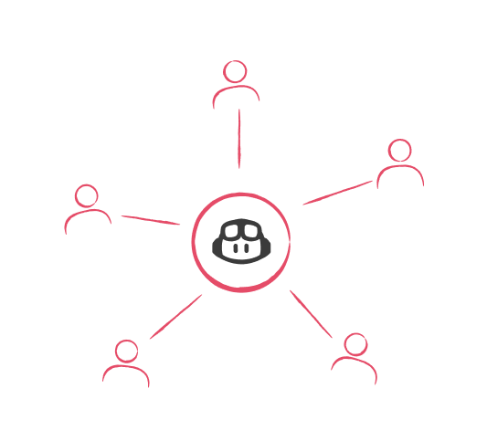

GCO tiene en marcha un proceso de formación técnica con GitHub Copilot —impartido por Raona y Pasiona— y el reto siguiente es convertir ese conocimiento en una práctica visible y habitual en el día a día de los equipos.
La fase de formación técnica en GitHub Copilot marca el inicio de la adopción. Los equipos ya han trabajado con Casos de uso en COBOL, DB2, PL/SQL y .NET, y han explorado capacidades avanzadas como MCP conectado a Jira y Confluence.
El reto ahora es convertir ese aprendizaje en uso habitual. Sin un sistema de adopción continua, GitHub Copilot puede quedar como una herramienta vista en formación, pero no integrada en el día a día.
Por eso, la siguiente fase debe centrarse en acompañar, activar y demostrar valor con casos concretos del trabajo real de GCO. La propuesta se articula en acciones de comunicación, soporte y acompañamiento continuo que mantengan vivo el uso de GitHub Copilot antes y después de la formación.
Canal de comunicación continua con contenidos breves, tips y Casos de uso para que GitHub Copilot esté presente en el día a día.
Foro permanente, sesiones AMA "Ask Me Anything" con expertos y reservas 1:1 de 15–30 minutos para resolver bloqueos reales en el momento exacto.
Cada pieza parte de casos ya demostrados en las sesiones: COBOL, DB2, SQLCODE, PL/SQL, .NET y Jira.
Los equipos ya conocen GitHub Copilot y han probado su valor con casos cercanos a su día a día. El siguiente paso es facilitar que ese aprendizaje se transforme en hábito: usar GitHub Copilot como apoyo práctico para resolver dudas, acelerar tareas y ganar contexto en el trabajo diario.
La adopción crece cuando la IA deja de verse como una novedad y empieza a sentirse como una ayuda disponible justo cuando el equipo la necesita.
Proponemos complementar la capacitación técnica con un ecosistema de adopción continua que mantenga vivo el aprendizaje y facilite su aplicación en el día a día. La comunidad, los contenidos prácticos y los espacios de soporte ayudarán a que cada equipo avance con más confianza, según su contexto y ritmo de adopción.
La formación da la base. El ecosistema de adopción ayuda a convertir esa base en práctica habitual, acompañada y visible dentro de GCO.
Línea 1
Canal activo en MS Teams con tips prácticos, infografías, micro-vídeos y Casos de uso — siempre conectados al stack de GCO: COBOL, DB2, PL/SQL, .NET.
Línea 2
Sistema para resolver bloqueos reales: foro permanente, sesiones AMA "Ask Me Anything" periódicas con expertos y reservas 1:1 de 15–30 min vía Microsoft Bookings.
Línea 3
Comunicar y centralizar los archivos de configuración ya creados que mejoran el uso de GitHub Copilot en casos de uso concretos del stack de GCO. Los equipos sabrán qué existe, para qué sirve y dónde descargarlo — sin depender de que alguien se los envíe.
Línea 4
Construir una ruta de adopción que empiece por necesidades reales del día a día y avance gradualmente hacia usos más técnicos. La IA se está convirtiendo en una capacidad clave del trabajo tecnológico: amplifica el criterio, acelera la ejecución y prepara a los equipos para un mercado que ya valora saber trabajar con ella.
Teams será el punto de encuentro para sostener la adopción en el tiempo. No solo como espacio de consulta, sino como una comunidad viva donde cada persona del equipo encontrará datos concretos sobre lo que gana al incorporar la IA, ejemplos de su entorno real y acompañamiento cercano. Cada canal tiene un propósito claro, una audiencia definida y contenido que responde a una necesidad real del equipo de GCO.
| Canal | Audiencia | Objetivo | Qué encontrarás |
|---|---|---|---|
| General | Toda la comunidad | Dar contexto oficial y orientar a los usuarios desde el primer día | Bienvenida, mapa de canales, mensajes institucionales |
| Anuncios y Tips Ágiles | Todo el equipo | Canal editorial principal — el lugar donde se publica el valor: métricas de productividad reales, tendencias del sector, tips de uso, casos de GCO y retos prácticos. El objetivo es que cada persona del equipo vea con datos concretos qué gana al adoptar GitHub Copilot en su día a día |
Por valor: #MétricasIA #Tendencias #CasoRealPor acción: #TipÁgil #PruebaHoy #NovedadPor tecnología: #COBOL #NET #DB2 #PLSQLPor fase: #Fase1 #Fase2…
|
| Casos de Uso Reales | Personas del equipo con GitHub Copilot activo | Documentar en profundidad problemas reales de GCO resueltos con IA — para que otros developers repliquen el resultado | Problema → prompt → resultado → aprendizaje |
| Foro de Ayuda / AMA "Ask Me Anything" | Cualquier nivel | Resolver dudas abiertas, desbloquear resistencias y conectar a expertos con usuarios con problemas reales | Preguntas abiertas, FAQs, convocatorias AMA "Ask Me Anything", respuestas de expertos |
| Primeros Pasos | Personas del equipo que aún no han activado GitHub Copilot | Guiar a usuarios que necesitan empezar sin fricción, desde cero y sin tecnicismos | Confirmar licencia, abrir GitHub Copilot, primera pregunta útil |
| Reservas 1:1 con Expertos | Cualquier persona del equipo con una duda concreta | Facilitar acompañamiento personalizado para casos que no encajan en el canal general | Enlace a Bookings, instrucciones, tipos de dudas ideales para la sesión |
El orden de las fases es obligatorio. Nunca se salta a configuraciones avanzadas sin consolidar las anteriores. La confianza se construye de menos a más.
Fase 1
Recordar que GitHub Copilot es la herramienta corporativa disponible y mostrar valor inicial concreto.
Fase 2
Llevar GitHub Copilot al entorno real de trabajo — donde los developers de GCO trabajan hoy.
Fase 3
Ampliar el uso hacia VS Code y terminal CLI sin forzar el cambio de entorno. La incorporación de VS Code requiere confirmación con IT — se activará cuando esté validada la infraestructura.
Fase 4
Personalización cuando ya exista uso básico consolidado — nunca antes.
No hay semanas temáticas. Desde la primera semana, cada publicación pertenece a uno de estos cuatro tipos — y los cuatro conviven en el mismo feed. Así el equipo recibe valor práctico desde el día uno: un dato contextualizado, un tip accionable, un caso de uso real y una tendencia relevante.
Los equipos que trabajan con código heredado son los que más se benefician de GitHub Copilot en las primeras semanas. Entender un programa de 3.000 líneas que lleva años sin tocar puede pasar de horas a minutos. En GCO, COBOL, DB2 y PL/SQL son exactamente ese escenario.
¿Qué programa tienes pendiente de entender? Empieza por ahí.Bancos y aseguradoras con entornos mainframe han reducido carga en análisis de impacto y documentación usando GitHub Copilot — exactamente los mismos casos de uso que existen en GCO. La diferencia no está en tener la licencia. Está en empezar a usarla.
GCO tiene las licencias activas. La ventaja es empezar antes.Las herramientas de IA están disponibles para todos. Lo que distinguirá a los equipos en los próximos años no es el acceso, sino quién aprende antes a integrarlas con criterio en su flujo diario. En GCO ese momento empieza ahora — con el stack real que ya usan.
Empieza por una tarea pequeña esta semanaGCO tiene licencias activas y el equipo de Raona y Pasiona ha configurado GitHub Copilot para Visual Studio, VS Code y CLI. Si no lo has probado todavía, el primer paso es abrirlo hoy y hacer una sola pregunta sobre el código en el que estés trabajando.
Una pregunta. Hoy. Eso es todo lo que hace falta para empezar.Rol + Contexto + Tarea. "Actúa como revisor de código. Tengo este bloque que hace X. Necesito entender si puede fallar bajo condición Y." Sin las tres partes, GitHub Copilot trabaja a ciegas. Con ellas, trabaja con criterio y da respuestas accionables.
Reformula tu próxima pregunta con estas tres partesGitHub Copilot responde mejor cuando recibe solo lo relevante. En vez de "revísame todo este archivo", selecciona únicamente el bloque que te interesa. GitHub Copilot leerá exactamente lo que necesita y dará una respuesta más precisa y accionable.
Selecciona solo el bloque que quieres revisar antes de preguntarCuando GitHub Copilot recibe el mensaje de error exacto, trabaja con los datos reales. Cuando tú lo describes con palabras, trabaja con tu interpretación. La diferencia en la calidad de la respuesta es significativa. Copia el log tal como aparece y pégalo directamente.
Pruébalo con el próximo error que veas en tu consolaGitHub Copilot genera primeras versiones, no versiones finales. Su valor está en reducir el tiempo de arranque: entender código, proponer estructuras, detectar riesgos. La validación, el contexto de negocio y la decisión final siguen siendo tuyas. Úsalo como un par técnico, no como una respuesta definitiva.
Trata cada respuesta de GitHub Copilot como un punto de partidaTienes un error en consola. En vez de buscarlo o preguntar a un compañero, pégalo en GitHub Copilot Chat: "¿Qué significa este error y cómo puedo resolverlo?" GitHub Copilot leerá el mensaje exacto y te dará una respuesta en segundos. Sin instalaciones extra. Sin configuración.
Pruébalo con el próximo error que aparezcaSelecciona un bloque de código que no entiendas del todo. Abre GitHub Copilot Chat. Pregunta: "Explícame qué hace este código, qué parámetros recibe y qué podría salir mal." En menos de un minuto tendrás una descripción clara que antes habría requerido revisar documentación o preguntar a quien lo escribió.
Elige un bloque de hoy y pruébalo ahoraSelecciona una función o procedimiento que tengas que entregar. Pídele a GitHub Copilot: "Genera un comentario de cabecera con: qué hace, parámetros de entrada y salida, y posibles errores." En 30 segundos tienes documentación base lista para revisar.
Aplícalo al siguiente artefacto que tengas que entregarSi tienes un programa COBOL que llevas tiempo sin tocar, selecciona la sección PROCEDURE DIVISION o el bloque principal. Pregunta: "Explícame qué hace este bloque y qué datos modifica." No necesitas dar más contexto que eso para empezar. El valor aparece en la primera lectura.
Elige un programa heredado que tengas pendiente de entenderGitHub Copilot ha evolucionado hacia un asistente completo: modo agente, integración con terminal CLI, plugins gestionados por empresa y nuevos modelos disponibles. Lo que se aprendió en las sesiones de formación es el punto de partida — la herramienta sigue creciendo y GCO tiene acceso a todo eso.
¿Qué funcionalidad de GitHub Copilot aún no has explorado?Los developers que integran IA en su flujo diario reportan mayor satisfacción profesional, menos bloqueos en tareas repetitivas y más tiempo para trabajo de valor. La IA no está quitando trabajo — está cambiando qué trabajo hace cada persona. Eso aplica igual en COBOL que en .NET.
¿Qué trabajo de valor querías hacer más y GitHub Copilot podría desbloquear?GitHub asegura que cada developer tiene control explícito sobre si incluye IA como co-autor en sus commits. GitHub Copilot es el asistente, no el programador. GCO tiene configuración corporativa para gestionar eso a nivel de organización.
Si tienes dudas sobre propiedad del código, el foro de ayuda está abiertoGitHub Copilot Workspace (agente que trabaja sobre repositorios completos), mejoras en GitHub Copilot para Visual Studio y plugins gestionados por empresa en public preview. Traducido a GCO: GitHub Copilot podrá analizar proyectos enteros, no solo bloques aislados.
¿Quieres que lo exploremos en la próxima sesión AMA (Ask Me Anything)?El bloqueo real aparece cuando el developer está delante de su código e intenta usar GitHub Copilot sin saber cómo pedir ayuda. El modelo de soporte existe para resolver ese momento.
| Mecanismo | Objetivo | Formato |
|---|---|---|
| Foro de Ayuda | Resolver dudas abiertas y detectar temas recurrentes | Canal de Teams activo permanentemente |
| Sesiones AMA "Ask Me Anything" | Espacios periódicos de pregunta abierta con expertos de Raona y Pasiona | Reuniones en Teams (frecuencia a definir) |
| Reservas 1:1 | Acompañamiento individual para bloqueos específicos | Sesiones 15–30 min vía Microsoft Bookings |
| Casos de Uso Reales | Convertir dudas repetidas en contenido reutilizable | Posts en canal "Casos de Uso Reales" |
| Repositorio de configuración | Comunicar la existencia de archivos de configuración descargables y dónde encontrarlos en el canal de Teams o Confluence | Anuncio en canal · Enlace directo al recurso |
Las primeras mediciones no buscan demostrar ROI definitivo. Buscan aprender qué mueve a la comunidad y qué acciones reforzar.
| Métrica | Fuente | Para qué sirve |
|---|---|---|
| Reacciones por publicación | Teams | Identificar qué temas generan más interés real |
| Comentarios y preguntas | Teams | Detectar qué dudas reales aparecen en la comunidad |
| Participación en el foro | Teams | Verificar si el canal funciona como espacio vivo |
| Reservas 1:1 solicitadas | Microsoft Bookings | Medir el nivel de acompañamiento necesario |
| Asistencia a sesiones AMA "Ask Me Anything" | Teams / Calendario | Validar si existe demanda de soporte grupal |
| Casos de uso detectados | Foro, sesiones 1:1 | Decidir qué contenidos priorizar |
| Uso de GitHub Copilot | GitHub Copilot Dashboard | Tendencia de adopción real (si hay acceso) |
Lo que se activa en cada etapa, en orden. El arranque empieza en las dos primeras semanas.
Cinco acciones concretas para poner en marcha el ecosistema. Cada una tiene un responsable y un resultado esperado.
2 publicaciones / semana · Validación cada lunes · Los 6 canales activos al mes